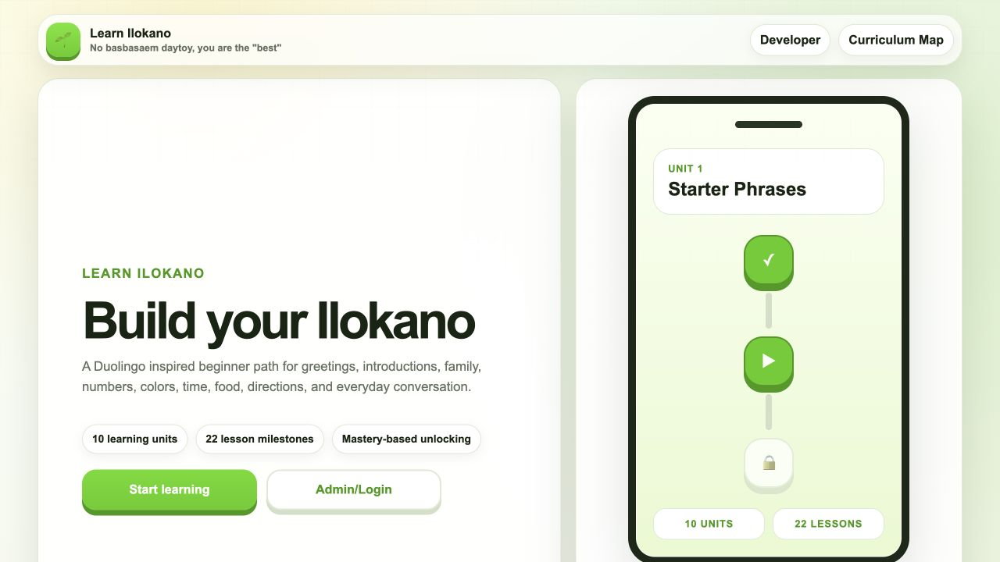
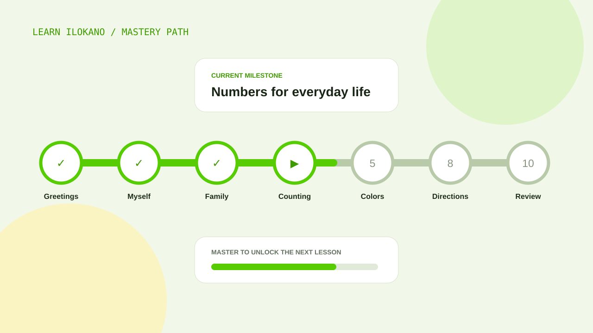

Start without feeling overwhelmed
Short lessons introduce useful greetings, family words, numbers, colors, food, directions, and daily conversation.
PROJECT 09 LANGUAGE LEARNING APP LIVE PROTOTYPE
A beginner-friendly learning path that brings together my computer science work and my background in Philippine Language and Culture.

I studied computer science and Philippine Language and Culture, and I wanted to make something where those two areas actually depended on each other. Learn Ilokano is my attempt to make beginner practice feel approachable while still respecting that language comes from speakers, teachers, family, and community.
Short lessons introduce useful greetings, family words, numbers, colors, food, directions, and daily conversation.
A learner must reach 100% on a milestone to unlock the next one, while unsuccessful attempts still remain part of the learning record.
The app is a practice tool, not a replacement for fluent speakers, community knowledge, or culturally grounded teaching.
The main dashboard shows one unit at a time so the learner knows what to do next. A curriculum map provides the wider view, and the phone-sized path preview communicates progress before the first lesson begins.
The first screen introduces the curriculum, the progression model, and the reason behind the project.

Completed milestones lead into the next unit while later lessons remain visible but locked.
Typed lesson data keeps prompts, choices, answers, explanations, XP rewards, and skill tags consistent across the application.
Lesson mastery, XP, streaks, and attempts remain on the device through local storage, so the prototype works without an account.
Number keys select answers and Enter checks or continues. Responsive layouts make the same lessons usable on a phone, tablet, or desktop.
Supabase schema and starter files outline a future path for secure authentication, cloud progress, contribution tools, and analytics.
A smooth interface cannot make an incorrect translation acceptable. This project taught me that language review, spelling, cultural context, and natural usage need the same attention as code.
The current lessons reflect my understanding and experience. They are a working starting point and should continue to improve through review from fluent speakers, teachers, and community contributors.
Try the prototype ↗